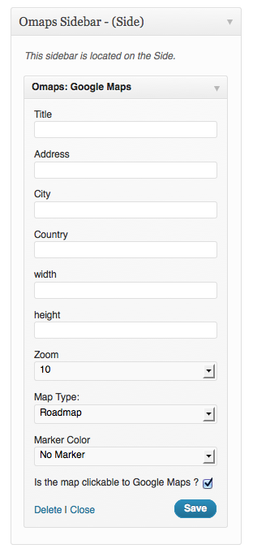

“Omaps” Documentation by “Ocholabs (Quentin Ravinet)” v1.0

Created: 07/18/2012
By: Ocholabs (Quentin Ravinet)
Email: contact@ocholabs.com
Thank you for purchasing my plugin. If you have any questions that are beyond the scope of this help file, please feel free to email via my user page contact form here. Thanks so much!
Table of Contents
A) Plugin Installation - top
Upload the Omaps folder to your Wordpress installation in the wp-content / plugins directory. Then go to the Plugins menu and click on "activate".
The plugin is ready!>
B) Widget - top
using the Omaps Widget is easy:
Drag the Omaps Widget in your Sidebar.
Then start filling the different fields :

Widget title
Address (ie. street & number)
City
Country
Width of the map in pixels (for 200px type 200)
Height of the map in pixels (for 200px type 200)
Zoom level : 1->15
Map Type : select from Roadmap, Hybrid, Satellite or terrain
Marker : you can add a marker on the map. It will be displayed at the address you filled in. Leave none for no marker or select a color to have one.
You can make the map clickable to google maps. Untick if you just want the map as an image.
When done, click on the Save button and your map will be displayed in your sidebar.
C) Shortcode - top
Omaps includes a shortcode to add Google Maps anywhere in your contents
You can type the shortcode directly if you feel geek enough…
Or you can use the Maps button to generate the shortcode with a form.
When you click the Omaps Shortcode Button, a popup window displays the form to create a map. The fields are the same as for the widget.
Once again, thank you so much for purchasing this plugin. As I said at the beginning, I'd be glad to help you if you have any questions relating to this theme. No guarantees, but I'll do my best to assist.
OCHOLABS - Quentin Ravinet